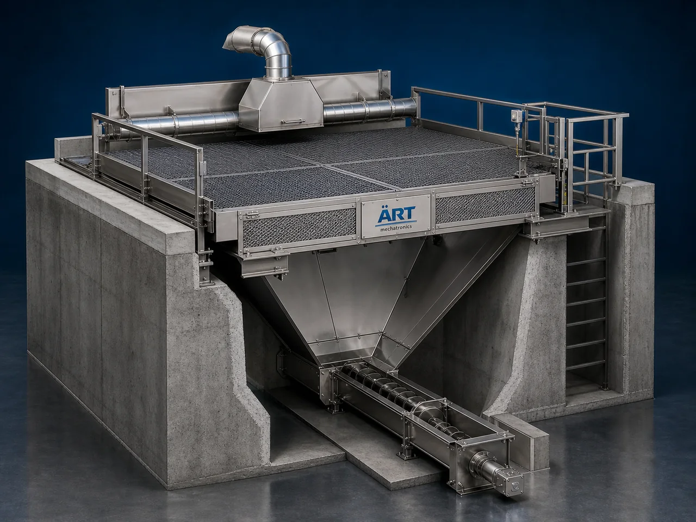

Storage Pit (Industrial Bulk Material Collection, Storage & Feeding System)
A Storage Pit, also known as an Industrial Material Storage Pit, Underground Storage Pit, or Bulk Material Collection Pit, is a heavy-duty industrial infrastructure system designed for temporary storage, collection, buffering, unloading, feeding, and transfer of grains, powders, granules, cement, food ingredients, biomass, and bulk materials.

About the Storage Pit
Storage pit systems are widely used for:
- Bulk material collection
- Temporary storage applications
- Truck unloading systems
- Conveyor feeding operations
- Underground material buffering
- Continuous process feeding
The system improves:
- Material handling efficiency
- Production continuity
- Factory material flow management
- Bulk unloading convenience
- Labor reduction
- Space optimization
Industrial storage pits are constructed using:
- RCC civil structures
- Mild steel fabrication systems
- Heavy-duty grating arrangements
- Automated conveying integrations
to ensure safe and efficient industrial bulk material handling operations.
Storage pits are widely used in industries such as:
Grain processing industries
Flour mills
Feed industries
Food processing industries
Cement industries
Biomass industries
Chemical industries
Recycling industries
where high-volume bulk material unloading and temporary storage are essential.
The system is highly suitable for:
- Grain unloading
- Powder collection
- Conveyor feeding
- Truck unloading systems
- Bulk material buffering
- Continuous production feeding
ART Mechatronics offers high-performance storage pit systems, engineered for heavy-duty industrial operation, bulk material handling efficiency, automated feeding integration, and reliable long-term performance.
Working Principle of Storage Pit
Bulk materials are unloaded directly into storage pit from:
- Trucks
- Dumpers
- Conveyors
- Manual feeding systems
Storage pit temporarily collects and stores material before transfer to processing system
Ensures continuous industrial production and smooth material flow.
Storage pit handles:
- Grains
- Flour
- Powders
- Biomass
- Cement
- Feed materials
- Food ingredients efficiently and safely.
Material extracted using: Screw conveyors Chain conveyors Bucket elevators Pneumatic conveyors Vibratory feeders
Storage pit integrates with: Silos Mixers Packaging systems Conveyor networks Processing plants
Material supplied continuously to downstream equipment automatically
Types of Storage Pit Systems
- 1. Grain Receiving Pit
Designed for: ✔ Grain unloading and handling systems
- 2. Conveyor Feeding Pit
Suitable for: ✔ Bulk material feeding applications
- 3. Truck Unloading Pit
Uses: ✔ High-capacity industrial unloading systems
- 4. Powder Storage Pit
Designed for: ✔ Powder and fine bulk material collection systems
- 5. Heavy Duty Industrial Pit
Suitable for: ✔ Cement, mining, and large industrial operations
- 6. Automated Storage Pit System
Designed for: ✔ Fully automated bulk material handling plants
Industries Using Storage Pit Systems
🌾 Grain Processing Industry Grain unloading and buffering systems 🌽 Flour Mill Industry Flour and powder collection systems 🐄 Feed Industry Animal feed unloading and storage systems 🍃 Food Processing Industry Ingredient collection and feeding systems 🏗️ Cement Industry Cement and fly ash collection systems ⚗️ Chemical Industry Powder and bulk chemical handling systems 🌱 Biomass Industry Biomass and wood pellet collection systems ♻️ Recycling Industry Recyclable material handling systems
Features & Advantages
- Efficient bulk material unloading and collection
- Continuous industrial production support
- Heavy-duty industrial construction
- Large-capacity temporary material storage
- Easy integration with conveyor and feeding systems
- Reduces manual handling and unloading time
- Suitable for automated bulk material handling plants
- Low maintenance and long service life
- Improves factory material flow efficiency
Technical Highlights
Pit Type: Underground storage pit Receiving pit Feeding pit Collection pit Construction: RCC civil structure Mild steel fabricated structure Material Handling Integration: Screw conveyors Chain conveyors Bucket elevators Pneumatic conveying systems Features: Heavy-duty grating Dust extraction systems Level sensors Vibratory discharge systems Automation: Semi-automatic Fully automatic PLC-based systems
Turnkey Storage Pit Solutions
ART Mechatronics offers: Complete storage pit systems Bulk unloading and handling solutions Conveyor and silo integration systems Automated material feeding systems Installation & commissioning After-sales service & AMC
Why Choose Art Mechatronics
Expertise in industrial bulk material handling infrastructure Customized storage pit solutions for multiple industries High-performance and durable industrial construction Efficient automated material handling integration Proven industrial performance across sectors
Applications
Grain Processing Plants Flour Mills Feed Manufacturing Plants Food Processing Industries Cement Plants Biomass Processing Units
Related Storage & Elevation machines
Get pricing & specs for the Storage Pit
Share the product, target capacity, current process and plant location. These details help our engineers discuss the right machine or line configuration.
One partner, from design to start-up
ART Mechatronics designs, manufactures, installs and commissions your Storage Pit solution with regional presence in India, UAE and Thailand.